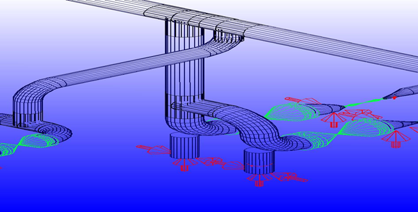
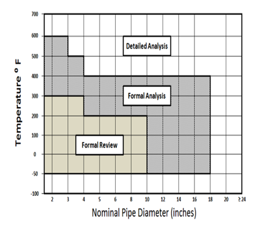
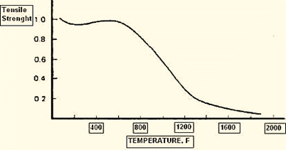
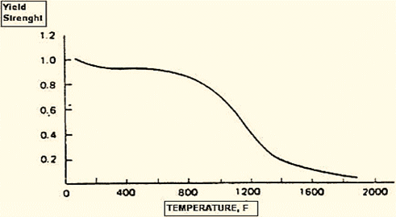

Stress Analysis Fundamentals

Imagine the early stage of designing a gas plant. The piping designer has routed a line from a heat exchanger nozzle to a pressure vessel elsewhere in the plant, with preliminary supports identified. The stress engineer's job is now to ensure the system has adequate flexibility for thermal expansion while keeping an economical layout — and, most importantly, that the loads imposed will not harm the equipment nozzles.
Most analysis of critical lines is done by computer, but a solid grasp of the underlying theory makes the work far easier — and is essential when evaluating output and solving problems such as overstress or nozzle overload.
What You Will Learn
- The purpose and function of piping stress analysis
- When formal (computer) analysis is required vs. not — per ASME B31.3 para 319.4
- How the Critical Line List is built and what goes into Categories A, B, and C
- Pipe loading — Sustained loads vs. Thermal loads
- Stress categories — Primary, Secondary, and Peak; hoop, longitudinal, radial, and expansion stress
- Allowable stress — Code Allowable Stress and the Allowable Stress Range, with the cyclic
ffactor
Section 1.1Purpose of Analysis
The main purpose of performing piping stress analysis is to ensure the system has sufficient flexibility:
- To accommodate thermal expansion or contraction
- To prevent excessive movement of the pipe at support locations
- To prevent excessive movement of the pipe at nozzle connections or fixed (anchor) points
Inadequate flexibility can cause the system to experience:
- Failure from overstress or fatigue of the piping material
- Excessive stresses in the supporting element at the point of support
- Leakage at joints
- Detrimental distortion or overload of connected equipment nozzles due to excessive forces and moments
- Resonance with imposed vibrations
Section 1.2Method of Analysis
ASME B31.3-2024 paragraph 319.4 defines two approaches: No Formal Analysis Required and Formal Analysis Required.
No Formal Analysis Required
A piping system needs no formal analysis if it:
- Duplicates, or replaces without significant change, a system with a successful service record.
- Can readily be judged adequate by comparison with previously analysed systems.
- Is of uniform size, has no more than two points of fixation, no intermediate restraints, and falls within the limits of the empirical equation below.
Formal Analysis Required
Any system that does not meet the criteria above must be analysed:
- A simplified or approximate method may be applied only within the range of configurations for which its adequacy has been demonstrated.
- Acceptable comprehensive methods include analytical and chart methods that evaluate the forces, moments, and stresses caused by displacement strains.
- Comprehensive analysis shall consider stress intensification factors for any component other than straight pipe; credit may be taken for the extra flexibility of such a component.
Section 1.3Critical Line List
In a gas plant there are countless piping systems across many services, pressures, and temperatures. Analysing every one would take enormous manhours. So the Lead Piping Stress Engineer defines which systems need formal analysis and which do not — in a document called the Critical Line List, prepared per ASME B31.3 para 319.4.1. Systems are divided into three categories.
Category A — Formal computer analysis required
- Pressure exceeding the ANSI B16.5 Class 2500 rating for a given temperature and pressure
- Pipe ≥ 6 in with temperature ≥ 200°C
- Pipe ≥ 10 in with temperature > 150°C
- All pipe > 12 in, regardless of temperature
- All pipe with design temperature of −274°F / cryogenic
- All lines listed on the P&ID as requiring an expansion joint
- Refractory-lined lines
- Lines with a relief valve in the system
- Lines connected to rotating equipment — pumps, turbines, centrifugal compressors
- Lines connected to reciprocating compressors and pumps
- Lines connected to air-cooled and plate heat exchangers
- Lines draining gases/vapours that allow dynamic loads to occur
- Lines connected to a tank and > 12 in
- Piping for Category M fluid
- Lines designed for more than 22,000 cycles
- High-temperature services where the design metal temperature exceeds 1000°F
- Systems requiring fatigue analysis due to pressure, thermal, or combined cycles
- Piping requiring response-spectrum analysis (e.g. earthquake loading)
- Piping subject to thermal bowing
- Large diameter pipe exceeding 48 in
Category B — Approximate methods permitted
Does not require formal computer analysis but can be checked using approximate methods, tables, or diagrams.
Category C — Visual check only
Needs no analysis at all — formal, approximate, or graphical. A visual inspection is sufficient.
From these criteria the Lead Piping Stress Engineer issues the official Stress Critical Line List — usually a Microsoft Excel spreadsheet. At some companies it includes non-critical lines too, making it a useful tool for monitoring progress. It typically contains:
| Field | Field |
|---|---|
| Line number | From / to connection points |
| Pipe diameter | P&ID number |
| Piping material specification | Operating temperature, pressure, density |
| Service (liquid or gas) | Design pressure & temperature |
| Type of insulation | Criticality A, B, or C (plus notes) |

Section 1.4Pipe Loading
In its installed position a piping system is subject to dead weight (pipe, fittings, insulation), snow or ice, line contents, wind on exposed piping, and earthquake or shock in special situations. Dead load effects (except contents) are essentially always present, while wind or earthquake effects vary and reach maximum design values infrequently, if ever. Loads fall into two groups:
Sustained Loads
Dead loads (pipe, flanges, fittings, valves) plus live loads (internal fluid, snow, ice) as well as pressure, wind, earthquake. The basic characteristic of sustained loads is that they can cause gross collapse of the system.
Thermal Loads
Thrust, forces, and moments resulting from the resistance to free thermal expansion or contraction by restraints and anchors. Thermal loads are cyclic and disappear when the restraints are removed.
Sustained load is mainly the weight of the pipe with its content sitting on the support — the support must sustain it, and the contact point must not bulge or dent. Thermal load is caused by expansion of the pipe due to hot content, or contraction if the content is cold or cryogenic.
Section 1.5Stress Categories
The two load types produce two corresponding stress types: Primary Stress and Secondary Stress.
1.5.1 Primary Stress
Caused by sustained load. Its defining characteristic is that it is not self-limiting. This is a hazardous stress — if it exceeds the yield strength through the entire cross-section, the pipe material fails, which can cause an accident. When found in analysis, the solution is usually simple: support the system properly. Primary stress comprises:
Hoop Stress (Circumferential)
When the diameter-to-thickness ratio D/t > 20 the pipe is considered thin-wall (Cooper, BS 8010); the hoop stress is nearly constant through the wall:
Longitudinal Stress (Axial)
The total longitudinal stress is the sum of axial-force, internal-pressure, and bending components:
Radial Stress
Unlike the others, radial stress varies through the wall — from P at the inner surface to zero at the outer surface.
1.5.2 Secondary Stress
Caused by thermal load — pipe expansion or contraction. It satisfies an imposed strain pattern rather than being in equilibrium with an external load, and its defining characteristic is that it is self-limiting. Secondary stresses are usually of bending nature across the wall thickness. They are not a direct cause of ductile failure from a single load application; only repeated, cyclic application creates a local strain range with the potential for fatigue failure. Secondary stress is also called Expansion Stress or Displacement Stress Range, SE (ASME B31.3 para 319.4.4, eq. 17):
1.5.3 Peak Stress
Described in Nayyar's Piping Handbook: peak stresses are the highest stresses in the region under consideration and are responsible for fatigue failure. Common types are stress concentrations at a discontinuity and thermal gradients through the pipe wall.
Section 1.6Allowable Stress
Allowable stress is a function of material properties (yield or tensile strength) and safety factors tied to specific design, fabrication, and inspection requirements. There are two types: Code Allowable Stress and Allowable Stress Range.
1.6.1 Code Allowable Stress (Basic Allowable Stress)
The maximum stress that can be safely applied to a piping material. ASME B31.3-2024 specifies the basic allowable stress for non-bolting materials as the lowest obtained from:
- ⅓ of SMTS (specified minimum tensile strength) at room temperature
- ⅓ of tensile strength at temperature
- ⅔ of SMYS (specified minimum yield strength) at room temperature
- ⅔ of yield strength at temperature
- For austenitic stainless and similar nickel alloys: the lower of ⅔ SMYS and 90% of yield strength at temperature
- 100% of the average stress for a creep rate of 0.01% per 1000 h
- Up to and including 815°C (1500°F): 67% of the average stress for rupture at 100,000 h
- Above 815°C (1500°F): (100 × Favg)% of the average stress for rupture at 100,000 h (Favg ≤ 0.67)
- 80% of the minimum stress for rupture at 100,000 h
The values of Sc (cold allowable) and Sh (hot allowable) appear in Appendix A, Table A-1 of B31.3-2024. Occasional effects such as wind and earthquake have little influence on fatigue life or creep, so they may be treated more liberally:
The sum of stresses due to sustained loads (SL) and occasional loads (wind, earthquake) shall not exceed 1.33 × the basic allowable stress at the metal temperature for the occasional condition considered. Wind and earthquake are not considered to act concurrently. For elevated-temperature ductile materials, the allowable for short-duration occasional loads may be taken as the lowest of 90% SMYS or 4× the basic allowable; loads exceeding 20 h over the system life use the stress giving a 20% creep usage factor (Appendix V).


As temperature rises, yield and tensile strength fall — so the allowable stress falls with them, since it depends on SMTS and SMYS.
1.6.2 Allowable Stress Range
First suggested by Rossheim and Markl as a measure of the permissible strain range in a cyclic load application, to guard against fatigue failure after a given number of cycles. It has appeared in the Piping Code since 1942. The load here is internal — thermal loading. A typical cycle runs from installation temperature up to maximum temperature, down at shutdown, then back to maximum: one cycle. The basic allowable range provides a minimum of 7000 cycles without failure:
The Allowable Displacement Stress Range SA (B31.3 para 302.3.5(d), eq. 1a) is checked against SE; SE shall not exceed SA:
Module 1 — Summary & Key Takeaways
This is the theoretical core: why we analyse, when formal analysis is required, and how loads become stresses checked against allowables.
- Stress analysis ensures flexibility for thermal movement while protecting material, supports, joints, and equipment nozzles.
- ASME B31.3 para 319.4 sets the No-Formal vs Formal analysis criteria; the empirical check is Dy/(L−U)² ≤ K₁.
- The Critical Line List sorts systems into Category A (computer analysis), B (approximate methods), and C (visual only).
- Sustained loads cause gross collapse and are not self-limiting; thermal loads are cyclic and self-limiting.
- Primary stress (from sustained load) is checked against Sh; Secondary/Expansion stress SE is checked against the range SA.
- Basic allowable range 1.25Sc + 0.25Sh targets ≥ 7000 cycles; SA = f(1.25Sc + 0.25Sh), with the liberal form recovering unused Sh.
- Occasional loads (wind, earthquake — never concurrent) are checked against 1.33 × basic allowable.
Self-Assessment Questions
- State the three conditions under which ASME B31.3 permits "no formal analysis," and write the empirical flexibility equation.
- List four conditions that would place a line into Category A of the Critical Line List.
- What is the fundamental difference between a sustained load and a thermal load, and which stress category does each produce?
- Why is secondary (expansion) stress described as "self-limiting," and what failure mode does it ultimately threaten?
- Write the expression for the basic allowable stress range and explain the meaning of the stress-range factor f.